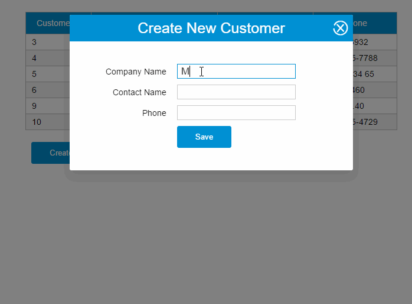

本文的主要内容如下：
- 介绍vue-resource的特点
- 介绍vue-resource的基本使用方法
- 基于this.$http的增删查改示例
- 基于this.$resource的增删查改示例
- 基于inteceptor实现请求等待时的loading画面
- 基于inteceptor实现请求错误时的提示画面
本文11个示例的源码已放到GitHub，如果您觉得本篇内容不错，请点个赞，或在GitHub上加个星星！
GitHub Source
本文的所有示例如下：
- http get示例
- http jsonp示例
- http post示例
- http put示例
- http delete示例
- resource get示例
- resource save示例(HTTP POST)
- resource update示例(HTTP PUT)
- resource remove示例(HTTP DELETE)
- inteceptor示例1——ajax请求的loading界面
- inteceptor实例2——请求失败时的提示对话框
各位在阅读这篇文章的内容时，可以先尝试该列表的最后两个示例，这两个示例综合使用了this.$http和inteceptor。
vue-resource特点
vue-resource插件具有以下特点：
1. 体积小
vue-resource非常小巧，在压缩以后只有大约12KB，服务端启用gzip压缩后只有4.5KB大小，这远比jQuery的体积要小得多。
2. 支持主流的浏览器
和Vue.js一样，vue-resource除了不支持IE 9以下的浏览器，其他主流的浏览器都支持。
3. 支持Promise API和URI Templates
Promise是ES6的特性，Promise的中文含义为“先知”，Promise对象用于异步计算。
URI Templates表示URI模板，有些类似于ASP.NET MVC的路由模板。
4. 支持拦截器
拦截器是全局的，拦截器可以在请求发送前和发送请求后做一些处理。
拦截器在一些场景下会非常有用，比如请求发送前在headers中设置access_token，或者在请求失败时，提供共通的处理方式。
vue-resource使用
引入vue-resource
<script src="js/vue.js"></script> <script src="js/vue-resource.js"></script>
基本语法
引入vue-resource后，可以基于全局的Vue对象使用http，也可以基于某个Vue实例使用http。
// 基于全局Vue对象使用http
Vue.http.get('/someUrl', [options]).then(successCallback, errorCallback);
Vue.http.post('/someUrl', [body], [options]).then(successCallback, errorCallback);
// 在一个Vue实例内使用$http
this.$http.get('/someUrl', [options]).then(successCallback, errorCallback);
this.$http.post('/someUrl', [body], [options]).then(successCallback, errorCallback);
在发送请求后，使用then方法来处理响应结果，then方法有两个参数，第一个参数是响应成功时的回调函数，第二个参数是响应失败时的回调函数。
then方法的回调函数也有两种写法，第一种是传统的函数写法，第二种是更为简洁的ES 6的Lambda写法：
// 传统写法
this.$http.get('/someUrl', [options]).then(function(response){
// 响应成功回调
}, function(response){
// 响应错误回调
});
// Lambda写法
this.$http.get('/someUrl', [options]).then((response) => {
// 响应成功回调
}, (response) => {
// 响应错误回调
});
PS：做过.NET开发的人想必对Lambda写法有一种熟悉的感觉。
支持的HTTP方法
vue-resource的请求API是按照REST风格设计的，它提供了7种请求API：
get(url, [options])head(url, [options])delete(url, [options])jsonp(url, [options])post(url, [body], [options])put(url, [body], [options])patch(url, [body], [options])
除了jsonp以外，另外6种的API名称是标准的HTTP方法。当服务端使用REST API时，客户端的编码风格和服务端的编码风格近乎一致，这可以减少前端和后端开发人员的沟通成本。
| 客户端请求方法 | 服务端处理方法 |
|---|---|
| this.$http.get(...) | Getxxx |
| this.$http.post(...) | Postxxx |
| this.$http.put(...) | Putxxx |
| this.$http.delete(...) | Deletexxx |
options对象
发送请求时的options选项对象包含以下属性：
| 参数 | 类型 | 描述 |
|---|---|---|
| url | string | 请求的URL |
| method | string | 请求的HTTP方法，例如：'GET', 'POST'或其他HTTP方法 |
| body | Object,FormDatastring | request body |
| params | Object | 请求的URL参数对象 |
| headers | Object | request header |
| timeout | number |
单位为毫秒的请求超时时间 (0 表示无超时时间) |
| before | function(request) | 请求发送前的处理函数，类似于jQuery的beforeSend函数 |
| progress | function(event) | ProgressEvent回调处理函数 |
| credientials | boolean | 表示跨域请求时是否需要使用凭证 |
| emulateHTTP | boolean |
发送PUT, PATCH, DELETE请求时以HTTP POST的方式发送，并设置请求头的X-HTTP-Method-Override |
| emulateJSON | boolean |
将request body以application/x-www-form-urlencoded content type发送 |
emulateHTTP的作用
如果Web服务器无法处理PUT, PATCH和DELETE这种REST风格的请求，你可以启用enulateHTTP现象。启用该选项后，请求会以普通的POST方法发出，并且HTTP头信息的X-HTTP-Method-Override属性会设置为实际的HTTP方法。
Vue.http.options.emulateHTTP = true;
emulateJSON的作用
如果Web服务器无法处理编码为application/json的请求，你可以启用emulateJSON选项。启用该选项后，请求会以application/x-www-form-urlencoded作为MIME type，就像普通的HTML表单一样。
Vue.http.options.emulateJSON = true;
response对象
response对象包含以下属性：
| 方法 | 类型 | 描述 |
|---|---|---|
| text() | string | 以string形式返回response body |
| json() | Object | 以JSON对象形式返回response body |
| blob() | Blob | 以二进制形式返回response body |
| 属性 | 类型 | 描述 |
| ok | boolean | 响应的HTTP状态码在200~299之间时，该属性为true |
| status | number | 响应的HTTP状态码 |
| statusText | string | 响应的状态文本 |
| headers | Object | 响应头 |
注意：本文的vue-resource版本为v0.9.3，如果你使用的是v0.9.0以前的版本，response对象是没有json(), blob(), text()这些方法的。
CURD示例
提示：以下示例仍然沿用上一篇的组件和WebAPI，组件的代码和页面HTML代码我就不再贴出来了。
GET请求
var demo = new Vue({
el: '#app',
data: {
gridColumns: ['customerId', 'companyName', 'contactName', 'phone'],
gridData: [],
apiUrl: 'http://211.149.193.19:8080/api/customers'
},
ready: function() {
this.getCustomers()
},
methods: {
getCustomers: function() {
this.$http.get(this.apiUrl)
.then((response) => {
this.$set('gridData', response.data)
})
.catch(function(response) {
console.log(response)
})
}
}
})
这段程序的then方法只提供了successCallback，而省略了errorCallback。
catch方法用于捕捉程序的异常，catch方法和errorCallback是不同的，errorCallback只在响应失败时调用，而catch则是在整个请求到响应过程中，只要程序出错了就会被调用。
在then方法的回调函数内，你也可以直接使用this，this仍然是指向Vue实例的：
getCustomers: function() {
this.$http.get(this.apiUrl)
.then((response) => {
this.$set('gridData', response.data)
})
.catch(function(response) {
console.log(response)
})
}为了减少作用域链的搜索，建议使用一个局部变量来接收this。
View Demo
JSONP请求
getCustomers: function() {
this.$http.jsonp(this.apiUrl).then(function(response){
this.$set('gridData', response.data)
})
}
View Demo
POST请求
var demo = new Vue({
el: '#app',
data: {
show: false,
gridColumns: [{
name: 'customerId',
isKey: true
}, {
name: 'companyName'
}, {
name: 'contactName'
}, {
name: 'phone'
}],
gridData: [],
apiUrl: 'http://211.149.193.19:8080/api/customers',
item: {}
},
ready: function() {
this.getCustomers()
},
methods: {
closeDialog: function() {
this.show = false
},
getCustomers: function() {
var vm = this
vm.$http.get(vm.apiUrl)
.then((response) => {
vm.$set('gridData', response.data)
})
},
createCustomer: function() {
var vm = this
vm.$http.post(vm.apiUrl, vm.item)
.then((response) => {
vm.$set('item', {})
vm.getCustomers()
})
this.show = false
}
}
})

View Demo
PUT请求
updateCustomer: function() {
var vm = this
vm.$http.put(this.apiUrl + '/' + vm.item.customerId, vm.item)
.then((response) => {
vm.getCustomers()
})
}

View Demo
Delete请求
deleteCustomer: function(customer){
var vm = this
vm.$http.delete(this.apiUrl + '/' + customer.customerId)
.then((response) => {
vm.getCustomers()
})
}
View Demo
使用resource服务
vue-resource提供了另外一种方式访问HTTP——resource服务，resource服务包含以下几种默认的action：
get: {method: 'GET'},
save: {method: 'POST'},
query: {method: 'GET'},
update: {method: 'PUT'},
remove: {method: 'DELETE'},
delete: {method: 'DELETE'}resource对象也有两种访问方式：
- 全局访问：
Vue.resource - 实例访问：
this.$resource
resource可以结合URI Template一起使用，以下示例的apiUrl都设置为{/id}了：
apiUrl: 'http://211.149.193.19:8080/api/customers{/id}'GET请求
使用get方法发送GET请求，下面这个请求没有指定{/id}。
getCustomers: function() {
var resource = this.$resource(this.apiUrl)
vm = this
resource.get()
.then((response) => {
vm.$set('gridData', response.data)
})
.catch(function(response) {
console.log(response)
})
}View Demo
POST请求
使用save方法发送POST请求，下面这个请求没有指定{/id}。
createCustomer: function() {
var resource = this.$resource(this.apiUrl)
vm = this
resource.save(vm.apiUrl, vm.item)
.then((response) => {
vm.$set('item', {})
vm.getCustomers()
})
this.show = false
}
View Demo
PUT请求
使用update方法发送PUT请求，下面这个请求指定了{/id}。
updateCustomer: function() {
var resource = this.$resource(this.apiUrl)
vm = this
resource.update({ id: vm.item.customerId}, vm.item)
.then((response) => {
vm.getCustomers()
})
}
{/id}相当于一个占位符，当传入实际的参数时该占位符会被替换。
例如，{ id: vm.item.customerId}中的vm.item.customerId为12，那么发送的请求URL为：
http://211.149.193.19:8080/api/customers/12
View Demo
DELETE请求
使用remove或delete方法发送DELETE请求，下面这个请求指定了{/id}。
deleteCustomer: function(customer){
var resource = this.$resource(this.apiUrl)
vm = this
resource.remove({ id: customer.customerId})
.then((response) => {
vm.getCustomers()
})
}
View Demo
使用inteceptor
拦截器可以在请求发送前和发送请求后做一些处理。
基本用法
Vue.http.interceptors.push((request, next) => {
// ...
// 请求发送前的处理逻辑
// ...
next((response) => {
// ...
// 请求发送后的处理逻辑
// ...
// 根据请求的状态，response参数会返回给successCallback或errorCallback
return response
})
})
在response返回给successCallback或errorCallback之前，你可以修改response中的内容，或做一些处理。
例如，响应的状态码如果是404，你可以显示友好的404界面。
如果不想使用Lambda函数写法，可以用平民写法：
Vue.http.interceptors.push(function(request, next) {
// ...
// 请求发送前的处理逻辑
// ...
next(function(response) {
// ...
// 请求发送后的处理逻辑
// ...
// 根据请求的状态，response参数会返回给successCallback或errorCallback
return response
})
})
示例1
之前的CURD示例有一处用户体验不太好，用户在使用一些功能的时候如果网络较慢，画面又没有给出反馈，用户是不知道他的操作是成功还是失败的，他也不知道是否该继续等待。
通过inteceptor，我们可以为所有的请求处理加一个loading：请求发送前显示loading，接收响应后隐藏loading。
具体步骤如下：
1.添加一个loading组件
<template id="loading-template"> <div class="loading-overlay"> <div class="sk-three-bounce"> <div class="sk-child sk-bounce1"></div> <div class="sk-child sk-bounce2"></div> <div class="sk-child sk-bounce3"></div> </div> </div> </template>
2.将loading组件作为另外一个Vue实例的子组件
var help = new Vue({
el: '#help',
data: {
showLoading: false
},
components: {
'loading': {
template: '#loading-template',
}
}
})
3.将该Vue实例挂载到某个HTML元素
<div id="help"> <loading v-show="showLoading"></loading> </div>
4.添加inteceptor
Vue.http.interceptors.push((request, next) => {
loading.show = true
next((response) => {
loading.show = false
return response
});
});
View Demo
示例2
当用户在画面上停留时间太久时，画面数据可能已经不是最新的了，这时如果用户删除或修改某一条数据，如果这条数据已经被其他用户删除了，服务器会反馈一个404的错误，但由于我们的put和delete请求没有处理errorCallback，所以用户是不知道他的操作是成功还是失败了。
你问我为什么不在每个请求里面处理errorCallback，这是因为我比较懒。这个问题，同样也可以通过inteceptor解决。
1. 继续沿用上面的loading组件，在#help元素下加一个对话框
<div id="help">
<loading v-show="showLoading" ></loading>
<modal-dialog :show="showDialog">
<header class="dialog-header" slot="header">
<h1 class="dialog-title">Server Error</h1>
</header>
<div class="dialog-body" slot="body">
<p class="error">Oops,server has got some errors, error code: {{errorCode}}.</p>
</div>
</modal-dialog>
</div>
2.给help实例的data选项添加两个属性
var help = new Vue({
el: '#help',
data: {
showLoading: false,
showDialog: false,
errorCode: ''
},
components: {
'loading': {
template: '#loading-template',
}
}
})
3.修改inteceptor
Vue.http.interceptors.push((request, next) => {
help.showLoading = true
next((response) => {
if(!response.ok){
help.errorCode = response.status
help.showDialog = true
}
help.showLoading = false
return response
});
});
View Demo
总结
vue-resource是一个非常轻量的用于处理HTTP请求的插件，它提供了两种方式来处理HTTP请求：
- 使用Vue.http或this.$http
- 使用Vue.resource或this.$resource
这两种方式本质上没有什么区别，阅读vue-resource的源码，你可以发现第2种方式是基于第1种方式实现的。
inteceptor可以在请求前和请求后附加一些行为，这意味着除了请求处理的过程，请求的其他环节都可以由我们来控制。
参考链接：https://github.com/vuejs/vue-resource/tree/master/docs